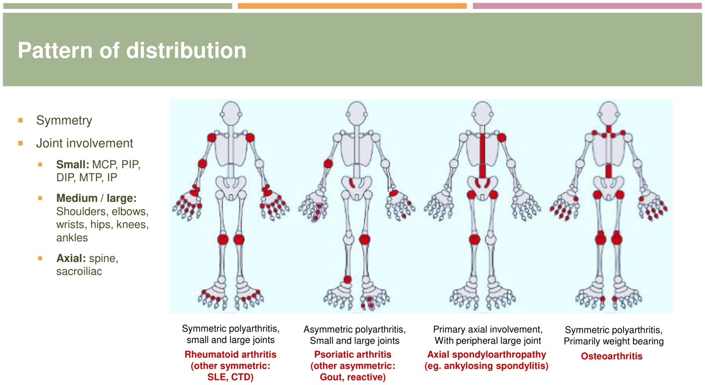

Approach to Rheumatology: the Week 11 Framework
- Emergencies first. One hot joint = septic until the aspirate says otherwise. Over 50 with a new headache = GCA: ESR/CRP, then prednisone today. Purpura, hemoptysis or an active urine = vasculitis or lupus: urinalysis, creatinine, chest x-ray, rule out infection.
- Is it the joint? Pain on passive movement and swelling = joint. Pain only at one spot on resisted movement = tendon/bursa/enthesis. Widespread pain with a normal exam = fibromyalgia (or PMR if over 50 with a high ESR).
- Inflammatory or mechanical? Inflammatory = stiffness > 60 min, better with use, warm and swollen. Mechanical = stiffness < 30 min, worse with use, bony and cool: OA.
- Count, time and map it. Mono (1) / oligo (2–3) / poly (≥ 4); acute (≤ 6 weeks) / chronic; then the pattern: symmetric small joints = RA, asymmetric + spine + enthesitis = spondyloarthritis, DIP + 1st CMC + knees/hips = OA, 1st MTP in attacks = gout.
- Test to confirm, not to fish. Hot joint → aspirate (3 C's). Suspected RA → RF + anti-CCP once. Suspected CTD → ANA (negative rules out; positive alone means little). Back pain → HLA-B27 + SI imaging only if inflammatory. Urate is unreliable during a gout attack.
How to Use This Page
This is the whole week as one decision path: the eight lectures sorted into the order you'd think about a patient. Every box links back to the lecture page that teaches it. Rheumatoid arthritis has its own section near the end, because it runs through the polyarthritis lecture and its treatment comes in Week 12.
| Question you ask | Where it's taught |
|---|---|
| Is this an emergency? | 11.1 MSK Infections, 11.2 Acute Monoarthritis, 11.7 Vasculitis |
| Inflammatory or mechanical? How many joints, how long, which ones? | 11.3 Approach to Polyarthritis, 11.6 Osteoarthritis |
| Is the spine involved? | 11.5 Seronegative Arthritides |
| Is it a child? | 11.4 JIA, 10.9 Pediatric Orthopedics |
| Is it more than the joints (skin, kidney, lung, vessels)? | 11.8 Connective Tissue Disorders, 11.7 Vasculitis |
The Flowchart
Danger first, then the joint, then the pattern.
From “My Joints Hurt” to a Diagnosis
- One tender spot, pain on resisted movement: tendinitis, bursitis, enthesitis
- Widespread pain, tender points, normal exam and labs: fibromyalgia
- Over 50, shoulder and hip girdle stiffness, high ESR: PMR (ask the GCA questions)
- Proximal weakness rather than pain, high CK: myositis
- Chronic: OA, chronic crystal disease, TB or fungal, Charcot, synovial tumour, AVN
- A child: septic, transient synovitis, oligo JIA (never a lone hip)
- Gout or pseudogout, gonococcal, Lyme
- A child: oligoarticular JIA (girl, 1–3, painless limp)
- Chronic: RA, SLE and the CTDs, psoriatic arthritis
- A child: polyarticular or systemic JIA
Built from Week 11's lectures. Joint counts follow Dr. Jiang (11.3); some reviews use 2–4 for oligo and ≥ 5 for poly, which changes nothing about the differential.
Naming the Disease
The pattern, the clues outside the joint, and the twins you must tell apart.
The Pattern Names the Disease

| Pattern | Think | The tell |
|---|---|---|
| Symmetric small joints (MCP, PIP, wrist, MTP) ± large, DIPs spared, additive | Rheumatoid arthritis; SLE and the CTDs (non-erosive) | Stiffness > 1 hour, RF/anti-CCP; lupus has skin, kidney and blood clues |
| Asymmetric oligo, legs, + DIPs, dactylitis, enthesitis | Psoriatic (or reactive) | Psoriasis, nail pitting, sausage digit, pencil-in-cup |
| Spine and SI joints ± large leg joints | Ankylosing spondylitis and the SpA family | Young, inflammatory back pain, HLA-B27, uveitis, Achilles |
| Knees, hips, DIPs, PIPs, 1st CMC | Osteoarthritis | Heberden's (DIP) and Bouchard's (PIP) nodes, cool and bony |
| 1st MTP, episodic, then ankle/knee | Gout | Hours to peak, tophi, diuretics/alcohol/kidneys |
| Knee or wrist in an older person | Pseudogout (CPPD) | Chondrocalcinosis; MCPs 2–3 + hemochromatosis |
| Migratory (one joint settles, the next flares) | Gonococcal, rheumatic fever, palindromic RA | Gonococcal: tenosynovitis + pustules + sexually active |
| A child, > 6 weeks, < 16 years | JIA (diagnosis of exclusion) | Oligo: painless knee, ANA → uveitis; systemic: quotidian fever, salmon rash |
Time course: additive = RA and the CTDs; episodic = crystals; migratory = rheumatic fever, early gonococcal, palindromic. 11.3
Look Outside the Joint
The skin is the most useful place to look. One clue often names the disease before any test.
| Where | Clue | Points to |
|---|---|---|
| Skin | Plaques, nail pitting | Psoriatic arthritis |
| Malar rash sparing the nasolabial folds, photosensitivity, discoid lesions | SLE | |
| Heliotrope, Gottron's papules, shawl/V sign, mechanic's hands | Dermatomyositis | |
| Sclerodactyly, calcinosis, digital ulcers, dilated nailfold capillaries | Systemic sclerosis | |
| Palpable purpura | Small-vessel vasculitis (rule out infection, hepatitis C) | |
| Nodules on extensor surfaces | RA (tophi in gout) | |
| Keratoderma blennorrhagicum, circinate balanitis | Reactive arthritis | |
| Evanescent salmon-pink rash with fever spikes | Systemic JIA (Still's) | |
| Eye | Red painful eye, anterior uveitis | Spondyloarthritis (HLA-B27) |
| Silent uveitis on slit lamp | Oligo JIA (ANA positive) | |
| Scleritis, episcleritis, dry eyes | RA, Sjögren's | |
| Painless sudden vision loss over 50 | GCA | |
| Mouth | Painless oral ulcers | SLE |
| Dry mouth, cavities, parotid swelling | Sjögren's | |
| Lungs | ILD | Myositis (anti-Jo-1), systemic sclerosis, RA |
| Nodules, hemorrhage, sinus disease | GPA (c-ANCA) | |
| Asthma + eosinophilia | EGPA | |
| Kidney | Red cell casts, proteinuria | Lupus nephritis, ANCA vasculitis |
| New hypertension + rising creatinine | Scleroderma renal crisis (ACE inhibitor) | |
| Gut, GU | Diarrhea or urethritis 1–3 weeks before | Reactive arthritis |
| Crohn's or ulcerative colitis | IBD-associated SpA | |
| Severe reflux, dysphagia | Systemic sclerosis | |
| Hands, cold | White → blue → red fingers | Raynaud's: all the CTDs, ~100% of SSc |
| Blood, pregnancy | Clots, miscarriages, low platelets | Antiphospholipid syndrome |
Twins to Tell Apart
| Twins | The one feature that splits them |
|---|---|
| Septic arthritis vs gout | Only the aspirate. Fever, redness and a high WBC happen in both; urate can be normal in an attack. |
| Gout vs pseudogout | Needles, negative, 1st MTP, hours to peak vs rhomboids, positive, knee, older, slower but lasts longer. |
| RA vs OA hands | RA: MCPs/PIPs/wrists, DIPs spared, soft swelling, > 1 h stiffness. OA: DIPs/PIPs/1st CMC, bony nodes, < 30 min. |
| RA vs psoriatic | Symmetric, DIPs spared, RF/anti-CCP vs asymmetric, DIPs, dactylitis, enthesitis, nails, seronegative. |
| RA vs lupus arthritis | Both symmetric small joints; lupus is non-erosive (deformities reducible) with skin, kidney, blood and ANA/dsDNA. |
| Inflammatory vs mechanical back pain | < 40, insidious, > 3 months, night pain, > 60 min stiffness, better with exercise vs any age, acute, worse with activity. |
| GCA vs PMR | Both over 50 with a high ESR. Headache, jaw, scalp or vision = GCA (60 mg); girdle stiffness alone = PMR (low-dose prednisone). |
| GPA vs MPA | Sinuses, nose, lung nodules, c-ANCA/PR3 vs no ENT, p-ANCA/MPO. EGPA = asthma + eosinophils. |
| Limited vs diffuse SSc | Skin distal to elbows/knees, anticentromere, pulmonary hypertension late vs proximal/trunk, anti-Scl-70, ILD and renal crisis early. |
| Transient synovitis vs septic hip (child) | Well, afebrile, after a cold, can bear weight vs febrile, unwell, won't bear weight, high CRP: aspirate. |
Tests
Order what answers your question; never a “rheum panel” for aches.
What to Order, and What It Means
| Test | Order it when | Reading it |
|---|---|---|
| Joint aspirate | Any hot joint; any new effusion you can't explain | WBC < 2,000 non-inflammatory; > 2,000 inflammatory; very high with > 75% PMNs + Gram stain/culture = septic. Crystals under polarized light. |
| CBC, creatinine, liver enzymes, urinalysis | Baseline for any inflammatory arthritis; always in suspected vasculitis/CTD | Cytopenias (lupus), active sediment (nephritis, vasculitis); also needed before DMARDs |
| ESR, CRP | Inflammation suspected; GCA/PMR | Non-specific. Both normal essentially rules out GCA. |
| RF | Suspected RA, once | 70–80% of RA; also 5–20% of healthy people, hepatitis C, endocarditis, TB, Sjögren's. Never to monitor. |
| Anti-CCP | With RF in suspected RA | ~95% specific; positive = more erosive disease |
| ANA | A CTD is suspected from clinical features | Positive in up to 30% of normal people. Negative rules lupus out; positive needs the specific antibodies. |
| Specific antibodies | ANA positive and the picture fits | dsDNA (lupus, flares, kidney), Smith (lupus, very specific), Ro/La (Sjögren's, neonatal lupus), Jo-1 (myositis + ILD), centromere (limited SSc), Scl-70 (diffuse SSc) |
| C3, C4 | Lupus activity | Low in a flare with dsDNA rising |
| Antiphospholipid antibodies | Clots, pregnancy loss, lupus | Lupus anticoagulant, anticardiolipin, anti-β2-glycoprotein I; repeat at 12 weeks |
| ANCA | Suspected small-vessel vasculitis | c-ANCA/PR3 = GPA; p-ANCA/MPO = MPA, EGPA. Biopsy confirms. |
| HLA-B27 | Inflammatory back pain, with SI imaging | > 90% of AS but 8% of everyone: supports, never diagnoses |
| Serum urate | Gout, ideally 2 weeks after the attack; to titrate allopurinol | Can be normal in an attack; high urate alone is not gout. Target < 360 µmol/L. |
| CK | Proximal weakness | High in myositis (check statins, hypothyroidism) |
Imaging in One Table
| Inflammatory (RA) | Degenerative (OA) | Other tells | |
|---|---|---|---|
| Joint space | Symmetric (uniform) narrowing | Asymmetric, worst where it bears weight | Gout: space kept until late |
| Bone | Periarticular osteopenia, marginal erosions | Osteophytes, subchondral sclerosis and cysts | Gout: punched-out erosions with overhanging edges; PsA: pencil-in-cup |
| Spine | C1–C2 instability | Disc space loss, facet OA | AS: sacroiliitis, thin syndesmophytes, bamboo spine; PsA: bulky asymmetric ones |
| When MRI | Osteomyelitis (most sensitive); early sacroiliitis (non-radiographic axial SpA). Almost never for OA. | ||
Every Diagnosis on One Grid
Who gets it, the clue, the test, and the first move.
The Week 11 Diagnosis Grid
| Diagnosis | Classic patient | Clinch it with | First move |
|---|---|---|---|
| Septic arthritis | Hot knee, prosthesis, IV drug use, diabetes, RA | Aspirate: Gram stain, culture, WBC | Washout + cefazolin (vancomycin if MRSA risk) |
| Osteomyelitis | Diabetic foot (probe to bone), back pain + fever | MRI, bone biopsy/culture | Debride dead bone; antibiotics alone won't cure chronic OM |
| Gout | Man 35–50, 1st MTP, diuretics, alcohol, CKD | Needles, negatively birefringent | Steroid injection, NSAID, colchicine or prednisone; allopurinol later for recurrence/tophi |
| Pseudogout | Older, OA knee | Rhomboids, positive; chondrocalcinosis | Same as gout flare; no urate lowering |
| Rheumatoid arthritis | Woman 30–50, symmetric hands, > 1 h stiffness | RF + anti-CCP, CRP, erosions | Early methotrexate; rheumatology |
| Ankylosing spondylitis | Young man, inflammatory back pain, uveitis | SI x-ray/MRI + HLA-B27 | Exercise + NSAID; then TNF or IL-17 inhibitor |
| Psoriatic arthritis | Psoriasis, nails, sausage digit | Clinical; pencil-in-cup | NSAID, methotrexate (skin + joints); not hydroxychloroquine |
| Reactive arthritis | 1–3 weeks after diarrhea or chlamydia | Clinical; test for chlamydia | NSAID; treat chlamydia |
| Osteoarthritis | Over 50, knee/hip/hands, worse with use | Clinical; x-ray stages | Exercise, weight loss, topical NSAID; replacement for end stage |
| JIA | Girl 1–3, painless swollen knee | Exclusion; ANA = uveitis risk | Naproxen, joint injection, slit-lamp screening |
| SLE | Young woman, rash, ulcers, arthritis, kidneys | ANA (entry), dsDNA, Smith, low C3/C4 | Hydroxychloroquine for all; sun protection |
| Antiphospholipid syndrome | Clots, pregnancy loss | aPL twice, 12 weeks apart | Venous: warfarin; arterial: antiplatelet; pregnancy: aspirin 81 mg |
| Sjögren's | Dry eyes and mouth, parotids | Anti-Ro/La | Symptoms; watch for lymphoma |
| Dermatomyositis | Proximal weakness + rash | CK, anti-Jo-1, biopsy | Steroids; screen for cancer in older adults |
| Systemic sclerosis | Raynaud's, tight fingers, reflux | Centromere / Scl-70 | Organ screening; renal crisis = ACE inhibitor |
| Giant cell arteritis | Over 50, headache, jaw claudication | ESR/CRP, biopsy or halo sign | Prednisone now (+ bone protection) |
| ANCA vasculitis | Sinuses, lungs, kidneys, purpura | ANCA, urinalysis, biopsy | Admit if unstable or pulmonary-renal |
Rheumatoid Arthritis, End to End
The commonest inflammatory polyarthritis, pulled together.
Rheumatoid Arthritis
Swollen, tender MCPs, PIPs, wrists or MTPs, symmetric, > 6 weeks, morning stiffness > 1 hour, fatigue. Squeeze tenderness across the MCPs or MTPs. DIPs spared. Women 2–3:1, peak 30–50; smoking is the big modifiable risk.
RF and anti-CCP (once), CRP/ESR, CBC, creatinine, liver enzymes, hand and foot x-rays (erosions = established damage). Hepatitis B/C and TB screening before treatment.
Viral arthritis (parvovirus, hepatitis), lupus, psoriatic arthritis, polyarticular gout or CPPD, hand OA, PMR in older adults.
Refer to rheumatology. Methotrexate is the anchor DMARD (with folic acid; not in pregnancy), often with a short steroid bridge; add or switch to biologics or a JAK inhibitor if targets aren't met. Week 12 covers the drugs.
The 2010 ACR/EULAR classification criteria
For a patient with at least one swollen joint not better explained by another disease. ≥ 6 of 10 points = RA.
| Domain | Finding | Points |
|---|---|---|
| Joints | 1 large joint | 0 |
| 2–10 large joints | 1 | |
| 1–3 small joints | 2 | |
| 4–10 small joints | 3 | |
| > 10 joints, at least 1 small | 5 | |
| Serology | RF and anti-CCP negative | 0 |
| Low positive RF or anti-CCP | 2 | |
| High positive (> 3× upper limit) | 3 | |
| Acute phase | Abnormal CRP or ESR | 1 |
| Duration | ≥ 6 weeks | 1 |

| Beyond the joints | What to know |
|---|---|
| Hands | Ulnar deviation, MCP subluxation, swan-neck and boutonnière deformities |
| Neck | C1–C2 (atlantoaxial) instability: x-ray the neck before an anesthetic |
| Skin, eyes, mouth | Nodules (seropositive); episcleritis, scleritis; secondary Sjögren's |
| Lungs, heart | ILD, nodules, effusions; pericarditis; higher cardiovascular risk |
| Blood | Anemia of chronic disease; Felty's (RA + splenomegaly + neutropenia) |
Practice the Path
Run each through the flowchart before opening the answer.
Six Patients
1. A 68-year-old on hydrochlorothiazide, hot swollen knee overnight, 38.2°C
Path and answer
One hot joint → aspirate before anything else. Gout is likely (diuretic), but septic arthritis has to be excluded by Gram stain and culture, and both can coexist. Rhomboid crystals with chondrocalcinosis would make it pseudogout.
2. A 74-year-old, 3 weeks of headache and pain chewing, ESR 88
Path and answer
Over 50 + new headache + jaw claudication = GCA. Prednisone 60 mg today, bone protection, biopsy or ultrasound within 1–2 weeks. Don't wait for the biopsy.
3. A 41-year-old woman, 4 months of swollen MCPs and wrists on both sides, 2 hours of stiffness
Path and answer
Joint, inflammatory, poly, chronic, symmetric small joints, DIPs spared = RA. RF + anti-CCP, CRP, hand/foot x-rays, refer for early methotrexate.
4. A 24-year-old man, 8 months of low back pain that wakes him at night and eases at the gym; a red painful eye last year
Path and answer
Inflammatory back pain + anterior uveitis = axial spondyloarthritis. SI x-ray (MRI if normal) and HLA-B27; exercise and NSAIDs first.
5. A 29-year-old woman, painful small joints, a rash on her cheeks after the beach, mouth ulcers; urine shows protein
Path and answer
Multi-system + organ involvement → SLE with possible nephritis. ANA, dsDNA, Smith, C3/C4, CBC, urinalysis with microscopy and creatinine; urgent rheumatology; hydroxychloroquine.
6. A 63-year-old, knee pain worse at the end of the day, 10 minutes of stiffness, crepitus
Path and answer
Joint, mechanical → osteoarthritis. No bloods or MRI; x-ray only to stage. Exercise, weight loss, topical NSAID.
A synthesis of the eight Week 11 lecture pages (11.1–11.8), whose slides and recordings stay the authority for exams. Checked against outside evidence: the 2010 ACR/EULAR rheumatoid arthritis criteria (Aletaha et al., doi:10.1002/art.27584), the 2019 EULAR/ACR SLE criteria (Aringer et al., doi:10.1002/art.40930), the ASAS axial spondyloarthritis criteria (Rudwaleit et al., doi:10.1136/ard.2009.108233) and the 2020 ACR gout guideline (FitzGerald et al., doi:10.1002/acr.24180), retrieved from PubMed. An OpenEvidence query (11-11) agreed with this framework and its four branch points. It also settles 11.7's slide-versus-quiz conflict: start bone protection with the prednisone, citing the 2022 ACR glucocorticoid-induced osteoporosis guideline. It counts oligo as 2–4 joints and poly as ≥ 5 (as do JIA's criteria in 11.4); this page uses Dr. Jiang's 2–3 and ≥ 4. The RA detail beyond 11.3 (criteria points, C1–C2, Felty's, the methotrexate details) is standard teaching that isn't in a Week 11 deck; treatment is taught in Week 12.